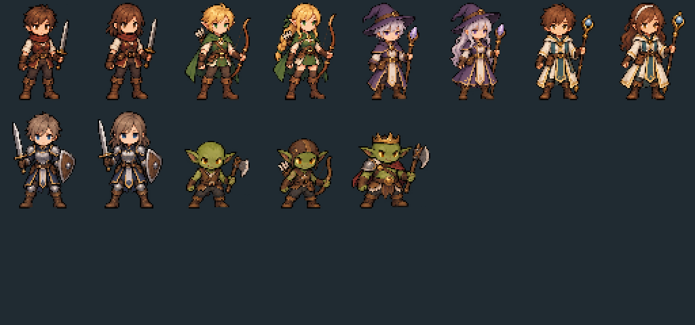
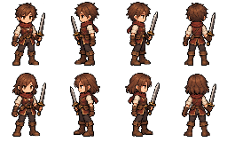
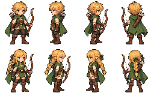
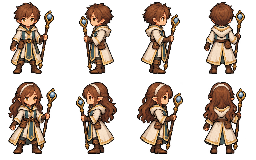
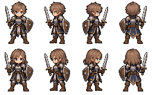
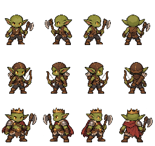

← 아트 도감 · 게임 실행생성 게임 에셋 · 첫 번째 팩
승인된 그림체로 생성한 원화를 실제 게임 규격으로 패킹했습니다. 남녀 5직업 각 4방향 40프레임과 고블린 3병종 각 4방향 12프레임, 총 52프레임입니다.
초기 파티와 고블린의 초상화·본부·전투에 적용합니다. 랜덤 용병 및 외형·장비가 변경된 기존 인물은 저장된 조합을 지키기 위해 기존 레이어 합성을 사용합니다. 걷기·공격 전용 원화는 아직 없으며 움직임·색조 효과로 연출합니다.

256×160 직업별 아틀라스 / 256×240 고블린 아틀라스. 프레임64×80, 발 피벗32,74.
아래 시트는 3배 확대 표시입니다. 가로 스크롤로 네 방향을 볼 수 있습니다. 열 순서: 정면 · 왼쪽 · 오른쪽 · 후면. 직업별 위쪽 남성 / 아래쪽 여성.
전사

궁수

마법사
사제

수호자

고블린

프레임·원본 좌표 메타데이터 · 적용 범위와 재패킹 방법